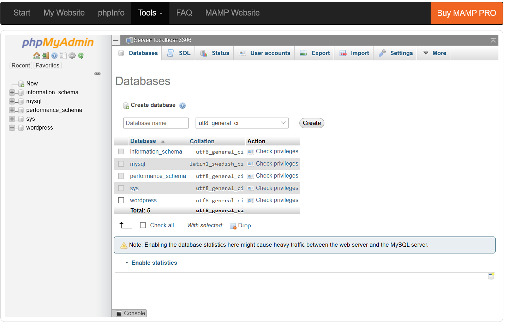
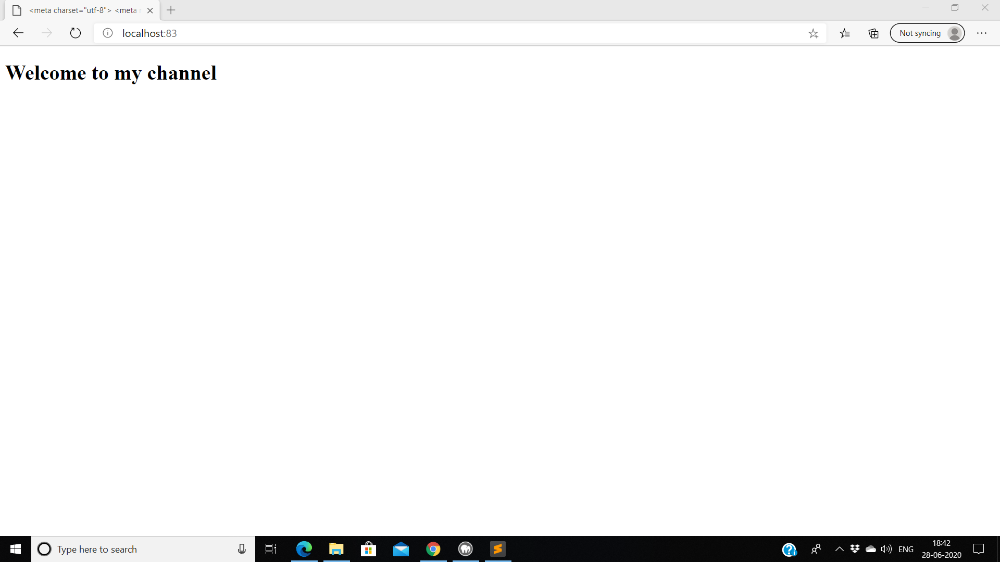
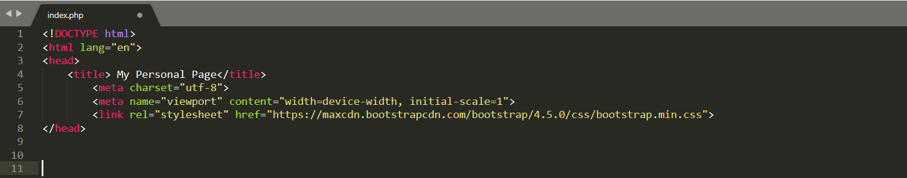
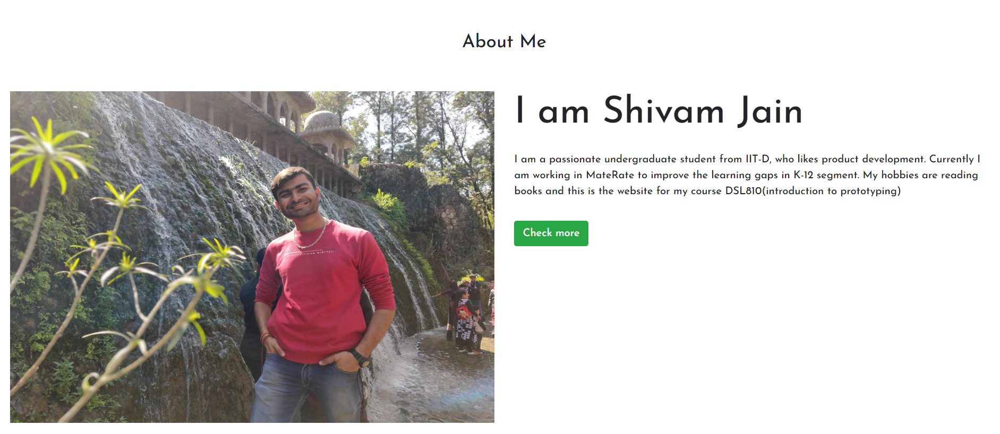
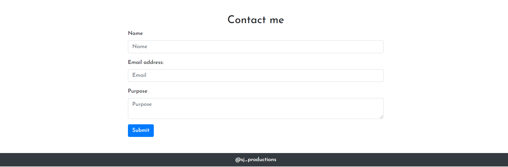

Assignment 1
Attempt 1: Using Wordpress
Installed MAMP and then created a MYSQL database in the MAMP with the name Wordpress. To Access MAMP main panel: localhost:port/MAMP/index.php (replace port with port of your Apache server) Goto phpadmin, create a new database with the name wordpress(as shown in the pic below)
Database creation using Wordpress
Download the wordpress package, unzip it and goto the MAMP. In MAMP, we replace the path to the root folder with the wordpress folder and then start the servers. Open the website 'localhost:port' it will redirect to the wordpress, install the wordpress(data is stored in the 'wordpress' table in mysql).
However, once I had setup the Wordpress, I moved onto editing the code and that was too complex for me and I didn't understand code. Although I was fascinated by the wordpress and wanted to create the webpage using wordpress but this would have defeated the purpose of assignment, so I started learning php and building everything from scratch
Attempt 2: Using php/mysql/bootstrap
The Video tutorial followed is given here, and W3schools for Bootstrap
(2.1) Setting up the environment
Created Index.php, About.php, Style.css and a basic HTML Page and starting up MAMP Apache servers
Basic Page using PhP
(2.2) Implementation of Basic Components
I Started with Implementation of navigation bar using bootstrap.
Mistake 1:
Had put the initial library import of Bootstrap in title tag. For Bootstrap to run properly, put the library in the head tag but outside of title tag as visible in the image below
MetaData for BootStrap
Changing Colour:
Then I changed the background colour of the navigation bar: change 'bg-dark' to 'bg-light' for light colour
Dark colour Navbar
Light colour Navbar
Adding Caraousel and Assingments/Projects Section:
Further, I procedded to add Caraousel using W3 school tutorial and also modified the navigation bar to include the assignments and projects section
Added Caraousel
Added Assignments & Projects Section
(2.3) About Me section
Created about me section using Bootstrap. I have divided the website into two parts of 6 grids each, the left contains an image and the right component includes heading and a brief summary about me as visible in the snapshot below
Snapshot of 'About Me' section
(2.4) Contact me section
Created a form for storing the information using 'form' in bootstrap. The form takes 'Name', 'Email', 'Purpose' in the details and stores them in MySQL table named userinfo. Atlast a footer was added in the page
Snapshot of 'Contact Me & Footer'
(2.5) Image Compression
Most of the images used in the website we under 50 kb, however the profile image was around 2 mb and was compressed using an online image compressor
(2.6) Hosting
Since the page was coded using Php and Mysql, so initially I looked for a reliable service that hosted an Apache and MYSQL server. However, all the services were paid(free ones were not reliable). So for the purposes of this assignment, I converted the code to HTMl and hosted using Github Pages